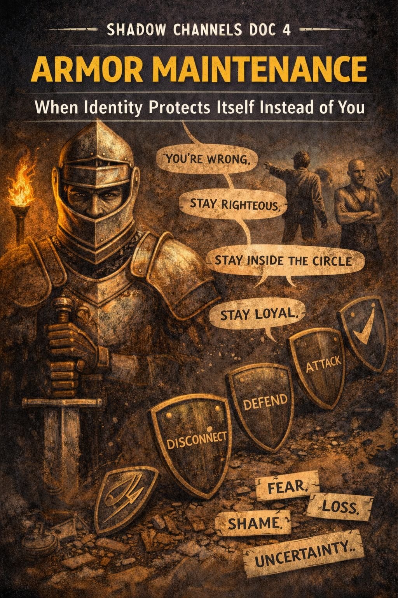

SHADOW CHANNELS DOC 4

ARMOR MAINTENANCE
When Identity Protects Itself Instead of You
What It Is
People rarely defend ideas.
They defend the identity attached to the idea.
Armor Maintenance is what happens when someone feels their:
- worldview
- tribe
- status
- self-story
- or moral reputation
is under threat.
The behavior looks aggressive.
Under the hood, it’s protective.
Identity panic wearing a war-helmet.
Why It Matters
When a person is armored, the goal is not truth.
It’s insulation.
- To stay right
- To stay righteous
- To stay loyal
- To stay inside the circle
- and above all, to not fall apart
Armor blocks:
- listening
- learning
- curiosity
- repair
- connection
It saves identity at the cost of relationship.
Where It Shows Up
Armor Maintenance can sound like:
- “You’re wrong.”
- “You don’t understand.”
- “You’re just jealous.”
- “You’re brainwashed.”
- “You used to be cool.”
- “Everyone knows…”
- “This is how it is.”
And look like:
- interrupting
- stonewalling
- mocking
- lecturing
- piling on with others
- rage-posting
- dogpiling
- character assassination
- cold withdrawal
- or a flaming Facebook meltdown
But also:
- silence that feels like ice
- over-agreement
- performative loyalty
- false certainty
Armor has quiet forms and loud ones.
The Deep Structure
Identity is scaffolded by beliefs and stories.
Remove one plank and the whole thing shakes.
People armor up when:
- a truth feels too costly to admit
- their role in the tribe is threatened
- they sense a Permission Cascade brewing
- disagreement feels like exile
- shame sits one inch behind the argument
- they know you might be right
Armor says:
“If I let you be correct, my self shatters.”
How It Protects
Armor protects the person from:
- fear
- humiliation
- loss of status
- grief
- admitting harm
- changing their mind
- being a beginner again
- the terror of uncertainty
- getting left behind
It is always, secretly, about vulnerability.
Healthy Questions
- What value do I feel is being threatened?
- Who taught me that value matters?
- Do I want connection or victory right now?
- If I’m wrong, what does that say about me?
- What would curiosity cost me?
Signs the Armor Is Cracking
The person:
- pauses
- asks a question
- admits a sliver of doubt
- softens their voice
- laughs at themselves
- tells a story instead of making a point
- asks what you think again
- or simply says “…maybe.”
Armor evaporates at the temperature of safety.
Ways to Disarm Without Force
- Validate the care beneath the belief
- Ask gentle questions instead of challenging the claim
- Lower your volume
- Share a personal example, not a counterattack
- Signal safety instead of battle
Example:
Instead of “You’re wrong,” try:
“It sounds like something important is at stake for you.”
People open when they feel seen, not cornered.
Application: One-Sentence Tool
“Armor protects the identity, but costs the connection.”
Shadow Channel Link
- Norm Debt feeds armor by making honesty dangerous.
- Narrative Gravity creates stories worth defending.
- Permission Cascades make armor spike before surrender.
- Exit Wounds appear when armor finally drops.
Armor isn’t the enemy.
It’s a frightened child wearing metal plates.
Landing Reflection
If the armor came off for one minute, what tender truth would appear?
Index of Shadow Channels
← Back to Shadow Channels Index
Back to Main Home Index